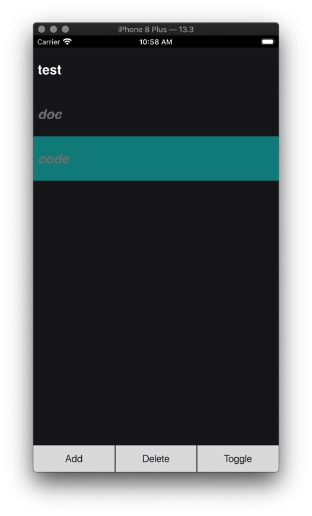

In last article, I have shown how we can build cross platform GUI application with Qt widgets using model/view pattern. Actually we can also build GUI apps with QML, QML combines usage of JavaScript and JSON-like DSL to build ui in declarative manner. In this article, I will build a TODO List app with QML and try to do a comparison between Widgets and QML. The final app I built with QML:
We build our QML app by combining components, every component can have their own layout, style, properties and internal state, I posit that the idea is generally the same with React's component. Each component can be described with one QML file, we combine them to make the final app. The main QML component looks like this:
import QtQuick 2.12
import QtQuick.Window 2.12
import QtQuick.Controls 2.12
import QtQuick.Layouts 1.3
import todoItem 1.0
Window {
width: 640
height: 480
visible: true
title: qsTr("ToDoX")
color: "#FF1C1C1E"
ColumnLayout {
id: container
anchors.fill: parent
spacing: 0
AddDialog {
id: addTodoDialog
}
TodoListView {
id: listview
model: mymodel
Layout.preferredHeight: parent.height - 60
onClick: {
console.log("clicked", index)
listview.currentIndex = index
}
onDoubleClick: {
var q_index = mymodel.index(listview.currentIndex, 0)
var data = mymodel.data(q_index, 0)
addTodoDialog.newTodo(data.title)
}
}
TodoToolBar {
Layout.preferredHeight: 60
TodoItem {
title: "New Todo"
status: TodoItem.normal
id: todo
}
onAdd: {
mymodel.addTodo(todo)
}
onDel: {
var q_index = mymodel.index(listview.currentIndex, 0)
mymodel.deleteTodo(q_index)
}
onToggle: {
var q_index = mymodel.index(listview.currentIndex, 0)
mymodel.toggleTodo(q_index)
}
}
}
}
View Hierarchy
Window
- ColumnLayout
- AddDialog
- TodoListView
- TodoCell
- TodoToolBar
Take TodoCell component as an example, component can have custom defined property, which can later be set by parent component
Rectangle {
id: container
property alias text: txt.text
property int status: 0
width: parent.width
height:100
color: "transparent"
TextEdit {
id: txt
text: ""
width: parent.width
height: parent.height
x: 10
verticalAlignment: Text.AlignVCenter
font.bold: true
font.strikeout: container.status == 2
color: status == 0 ? "white" : "gray"
font.italic: status == 2
font.family: "Helvetica"
font.pixelSize: 30
}
}
TodoToolBar.qml
QML components can also have signals for event handling, we can attach event handle to them.
Item {
id: root
signal add
signal del
signal toggle
Layout.preferredWidth: parent.width
RowLayout {
anchors.fill: parent
spacing: 2
Button {
text: qsTr("Add")
Layout.fillWidth: true
Layout.fillHeight: true
onClicked: {
root.add()
}
}
Button {
text: qsTr("Delete")
Layout.fillWidth: true
Layout.fillHeight: true
onClicked: {
root.del()
}
}
Button {
text: qsTr("Toggle")
Layout.fillWidth: true
Layout.fillHeight: true
onClicked: {
root.toggle()
}
}
}
}
The cool part of QML is that we can reuse our legacy C++ code, integrating C++ code into QML is quite effortless, the model(Model/View pattern) part is actually the same as we used in Qt Widget. The final result is that we can build UI with QML in declarative manner and reuse our legacy C++ code for heavy biz logic, integrating QML into legacy Qt Widget project is painless, we can even replace our old widget with QML component in progressive manner. Building UI in QML is much natural and efficient compared to Qt Widget.
Model
struct TodoItem: public QObject
{
Q_OBJECT
public:
QString title;
enum Status {
normal = 0,
wip = 1,
completed = 2,
} ;
TodoItem(const TodoItem& other) {
title = other.title;
status = other.status;
}
TodoItem& operator=(const TodoItem& other) {
title = other.title;
status = other.status;
return *this;
}
TodoItem() {
title = "";
status = normal;
}
Status status;
Q_ENUM(Status)
Q_PROPERTY(QString title MEMBER title)
Q_PROPERTY(Status status MEMBER status)
};
Q_DECLARE_METATYPE(TodoItem);
class TodoModel : public QAbstractListModel
{
Q_OBJECT
public:
explicit TodoModel(QObject *parent = nullptr);
QList<TodoItem> *todos;
int rowCount(const QModelIndex& parent = QModelIndex()) const override;
QVariant data(const QModelIndex &index, int role) const override;
bool setData(const QModelIndex &index, const QVariant &value, int role = Qt::EditRole) override;
Qt::ItemFlags flags(const QModelIndex &index) const override;
public slots:
void appendTodo(const TodoItem &obj);
void addTodo(TodoItem * todo);
void deleteTodo(const QModelIndex &index);
void toggleTodo(const QModelIndex &index);
void updateTodoTitle(const QModelIndex &index, const QString &);
signals:
};